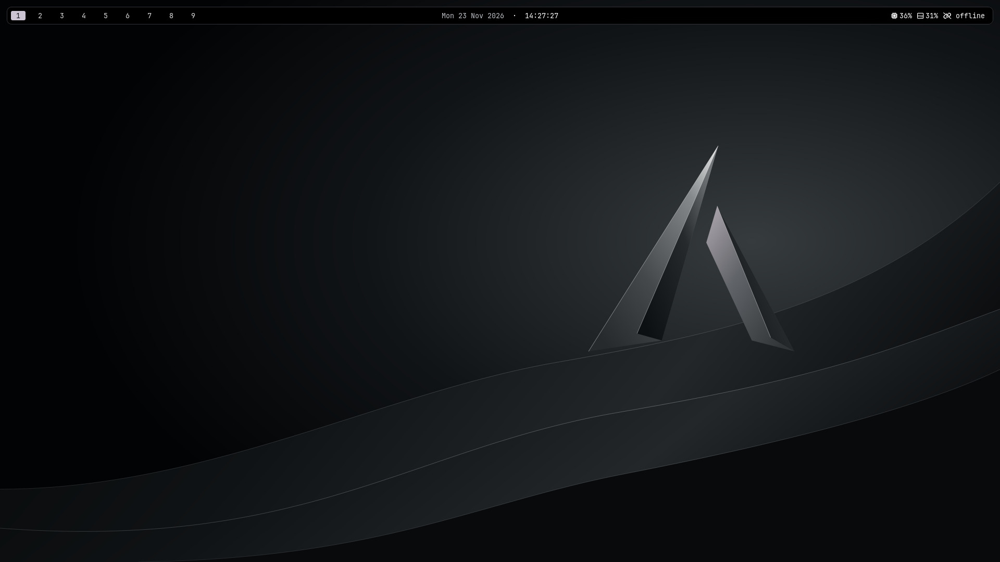

About archelinux
archelinux is an Arch-based distro for people who still think in i3 keybindings. Boot the USB, pick a disk and your tools, and log in to a SwayFX desktop with Zsh, tmux and Neovim. The configs are ordinary files in your home directory.
Download 2.0.0 · Install guide · Build it yourself

The installer starts with XFS, optional LUKS encryption, and the Zen and LTS kernels. Keep the recommended workspace or clear the tool selection for a console install. The USB carries archelinux’s own pacman repository. Arch dependencies download from mirrors as you install.
At the keyboard
- Super+Enter opens Foot. Super+D opens Fuzzel. Move between tiles with Super+H/J/K/L.
- Zsh starts with the Oh My Zsh
bureauprompt. Use Right to accept a suggestion and Esc Esc to addsudo. - Neovim runs LazyVim with
archevim, a dark colorscheme with a black file tree. Ctrl+H/J/K/L moves between editor splits and tmux panes. - Choose
gh, GitHub notifications for Waybar, language servers, developer runtimes, or the NVIDIA CUDA bundle in the installer. You can also add a bundle later with pacman.


Twin Blades wallpaper from dharmx/walls. The Waybar theme draws on okubax/dotfiles.

Hardware reports
Tell us which GPU, kernel and display setup you used, especially for NVIDIA, multi-monitor setups or suspend. Open an issue.
archelinux is GPL-3.0. Bundled software retains its upstream licenses.